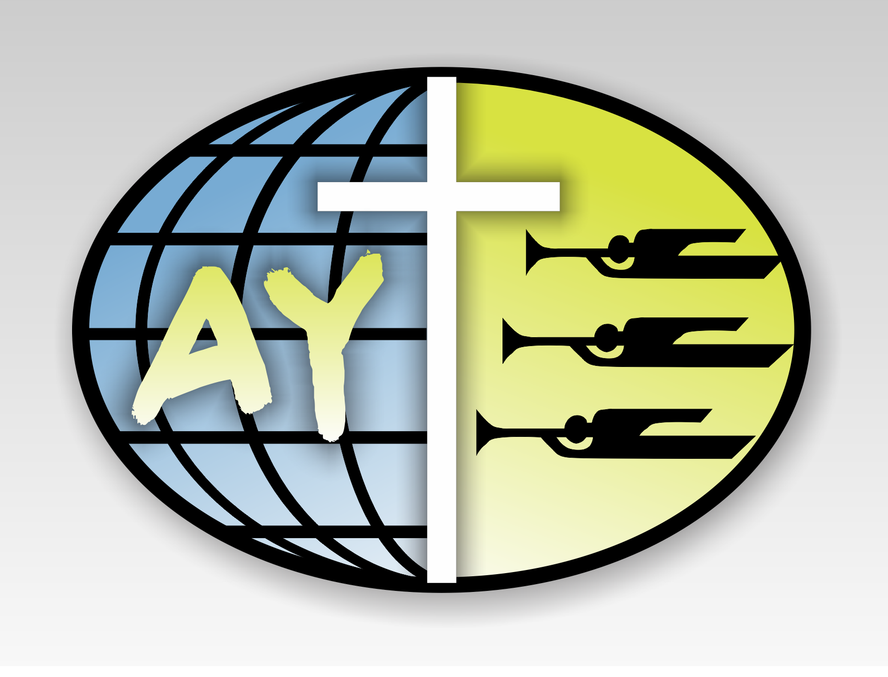

God calls every member of the church into ministry. The church is a kingdom of priests
set free to minister for Christ. Our priesthood is to each other within the church and to the world.
An elder, like any other church officer, is a ministering servant of God. Every Christian believer
is called to ministry, gifted by the Holy Spirit, and in baptism ordained for ministry (Eph. 4:11-12).
Duties of the Elder:
The ministry to which a person is called when he becomes an elder can best be described in the following ways:
Appropriate Spiritual Gifts:
Time Commitment:
Including Sabbath duty, most elders will need to plan on two to four hours per week to carry out their duties.
The office of deacon is described in the New Testament (1 Tim. 3:8-13) and the word "deacon" is variously interpreted as
"servant, minister, writer, attendant." The duties of deacons involve a wide range of practical services for the church including:
This department is responsible for handling of church finance in a respinsible maaner.
This department is respinsible for planning and overseeing development projects in the church.
MISSION STATEMENT
To glorify God through the planning, preparing and presenting of culturally relevant and inspiring worship experiences that move
people to respond to the work of Christ in their lives.
VISION STATEMENT
To train, grow and utilize fellow believers whose primary
talents are in the areas of Music,Audio/Visual production, Drama and Electronic Arts for the sole purpose of glorifying Christ.
Our secondary purpose is to grow together in Christas a family of believers; ministering to one another,
holding each other accountable and "doing life" together.
Music ministry at Kimoro Seventh-day Adventist Church is focused on serving, rather than performing.
All the music made is meant to bring both the musicians and congregation closer to God.
It is an important piece to the order of the worship service. At Kimoro SDA, we love to praise and worship Jesus Christ.
There are several groups that help to make the music department an evangelistic tool in the goal of reaching souls.
We enjoy singing every Sabbath, because as a church family we understand that we must continue to use our talents and gifts for Christ.
The music department’s goal is always to win at least one soul for Christ whenever we are called to serve in music.
The purpose of the Adventist Youth Society is to facilitate and support the ministry of the Church in winning, training, holding, and reclaiming its youth. The Adventist Youth Society is not a repetition of the Sabbath Worship Service, the Sabbath School Program, or the Wednesday Night Prayer Meeting. 
Young people are able to work together in the development of a strong youth ministry which includes spiritual, mental, and physical development for each individual, Christian social interaction, and an active witnessing program which supports the general soul-winning plans of the church.
It is the goal of the Adventist Youth Society to involve all young people in meaningful activities which will tie them closer to the church and train them for useful service.
"The Advent Message to All the World in this Generation"
"The Love of Christ constraineth us"
"Loving the Lord Jesus, I promise to take an active part in the work of the Adventist Youth Society. Doing what I can to help others, and to finish the work of the gospel in all the world."
The Department of Women's Ministries exists to uphold, encourage, and challenge Adventist women in their pilgrimage as disciples of Our M Jesus Christ and members of His world church.
Elevate women as persons of inestimable worth because they have been created and redeemed
Enable women to deepen their faith and experience spiritual growth and renewal
Build networks among women in the world church to encourage bonds of friendship and mutual support
And the creative exchange of ideas and information
Mentor young Adventist women, encouraging their involvement, and creating paths for them as they reach for their potential in Christ
Seek expanding avenues of dynamic Christian service for women
Challenge each Adventist woman with her potential to complement the gifts given to other women and men as they work side by side to further the global mission of the Seventh-day Adventist Church
Bring women's unique perspectives to the issues facing the world church
Seek expanding avenues of dynamic Christian service for women that out of the fullness we as women have personally found in Jesus Christ, we may be empowered to share the good news within our families, among our fellow believers, and in ever expanding circles in the unsaved world.
Our Core Beliefs:
Children are gifts from God. (Psalm 127:3-5 & Luke 17:2) Children, like all the rest of humanity, are seriously flawed and need a savior.
(Genesis 8:21 & Psalm 51:5) Children can grow in grace & use their spiritual gifts for the glory of God. (1 Peter 3:18)
Our desire is to reach children for Jesus Christ through quality, age appropriate interaction and creative activities designed
to build a strong spiritual foundation in the life of each child. We love our children, present the gospel, disciple, believers
toward spiritual maturity, and partner with parents as well as encourage every family to make a whole life commitment to our Savior,
Jesus Christ.
Stewardship starts with God as the Creator Owner of the Universe who made Adam and Eve after His own image. With His personal touch, God established an intimate relationship and union with humanity that was to be nurtured in the intimacy of time spent together. This shared image[1] and shared intimacy [2] are foundational to understanding the spirit and dynamics of biblical stewardship.
God established Adam and Eve as rulers over the earth (Gen. 1:26-28). Through this act, God made them His partners over creation — placing the entire world as their trust in shared governance[3] with Him. It was in Eden that humanity first became stewards, and acted as God’s agents on earth. In this sense, God established a relationship of interdependence[4] with humanity. The awesome concept of God’s dependence upon humanity is crucial to our accepting full dependence upon Him.
When sin entered the world, it shattered and distorted God’s creation and separated humankind from God. The union with the Creator was broken, the image of God was marred, the shared governance was surrendered, and this earth became sin’s domain.
In Jesus Christ, God restored this divine-human relationship and re-established His kingdom on earth. Thus the gospel provides reconciliation between God and humanity as Christ became the second Adam, winning back humanity’s lost stewardship. Today, stewardship begins with the recognition of God’s sovereignty as Creator, Redeemer, Sustainer and Owner.
Through the incarnation, Christ identified Himself fully with humanity. The shared intimacy of God with humankind is embodied in Jesus Christ—the God-man. His life and death form the basis of a renewed relationship with God. Through the ministry of the Holy Spirit, the living presence of Jesus restores the reality of a shared intimacy between God and us.
As the model steward, Jesus Christ demonstrated the lifestyle of the individual in union with God. Through His ministry in heaven, Christ enthrones humanity with Him, (Eph. 2:6) and renews humanity’s partnership with God. In this partnership, the human agent functions as regent under the authority of God. When allowed to live on the throne of one’s life, God lifts the believer to sit with Him on His throne. All the power of heaven is available to aid God’s stewards in their daily living.
Restoring the image of God in humanity is part of the redemption process. While not complete before the Second Coming, the process begins here on earth. The Holy Spirit brings the promised presence of Christ into the life of the believer (John 14:16-20), and begins a new creation (2 Cor. 5:17). Sinful humanity, saved by grace, once again shares the image of God (2 Pet. 1:4). Through the power of the living Christ, the believer who accepts this divine gift is once again in complete union with God.
| Estate Name | God's Tithe(Ksh.) | Offerings(Ksh.) | Total Amount(Ksh.) |
| Orore A | 4,000 | 4,501 | 8,501 |
| Orore B | 10,000 | 5,243 | 15,243 |
| Kimoro A | 10,001 | 4,278 | 14,279 |
| Kimoro B | 5,000 | 2,451 | 7,451 |
| Ng'oche | 3,002 | 2,099 | 5,992 |
| Totals | 32,003 | 19,468 | 51,471 |
Personal Ministries is a combination of Sabbath School and Personal Ministries Department which encompasses
the areas of outreach and evangelism. Conscious that “every true disciple is born into the kingdom of God as a
missionary” (Desire of Ages, 195), Personal Ministries focuses on training church members for soul winning, and
provides resources and expertise in church growth-oriented systems and strategie.
In 1853, only a few years after the first group of Sabbath-keeping Adventists was formed in Washington, New Hampshire, James White organized the first regular Sabbath School in Rochester, New York. In 1852, estimating an informal membership of about 1,000 in the state of New York, White had written a series of 19 lessons appearing in the new Youth’s Instructor.
From its inception Sabbath School has focused on four emphases that are still prominent to this day: fellowship development, community outreach, Bible study, and foreign mission. A solid balance of these elements characterizes the most vital Sabbath Schools around the world.
Based on these four emphases, from its beginning in 1853, Sabbath School membership has exploded from a handful of believers in upstate New York to an estimated 14 million today. Former General Conference President Jan Paulsen has said that Sabbath School is like breakfast.
For more than 150 years it has provided the spiritual nourishment that is needed to meet the challenges that arise during the rest of the week.
To access SABBATH SCHOOL Resources, kindly follow this link: SABBATH SCHOOL
Copyright © 2022 Kimoro S.D.A Church All Rights Reserved. Developed by Geofrey Wasonga